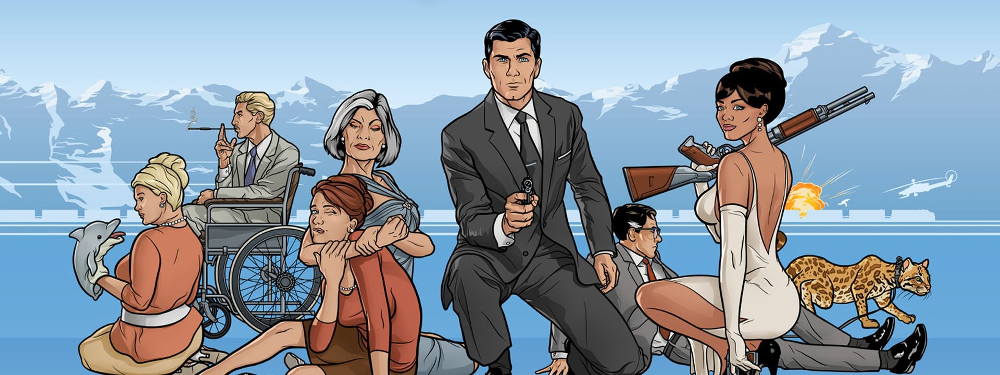

About Archer
Sterling was born in Tangier as the only child of Malory Archer (Jessica Walter), the retired agent-turned-director of the New York-based International Secret Intelligence Service (ISIS). Due to Malory’s involvement in espionage throughout World War II, Archer was raised until age 5 by his servant, Woodhouse
Agent Sterling Archer his friends
Archer's Characteristics
Archer is an extremely:-
- narcissistic
- arrogant
- selfish
- insensitive
- self-absorbed
- sex-crazed
who is constantly focused on himself and his own needs and desires. He arrogantly believes himself to understand any situation better than his colleagues.
Archer's Friends
Archer had a couple of friends but due to his characters, he always had a complicated friendships with them but below are some of his friends